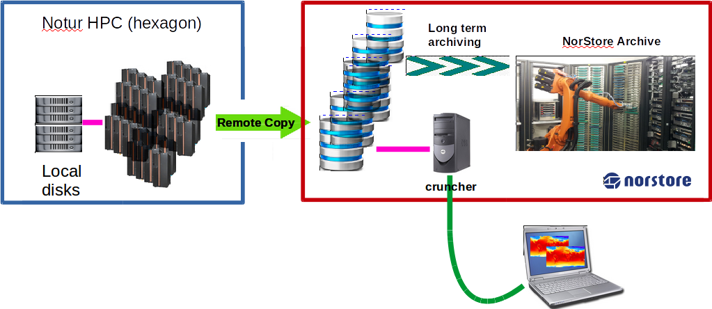
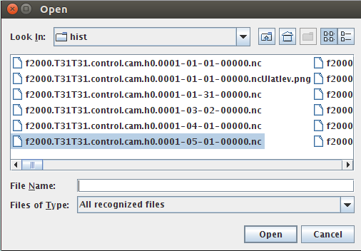

Check setup on Cruncher
To post-process your model results on norStore facility (Cruncher), you need to be able to run Remote X11 applications.
If you haven't checked your remote access yet, please follow this link.
From a terminal:
ssh -Y $LOGNAME@cruncher.norstore.uio.no
where $LOGNAME is your UIO username (replace it by your own username!)
Please note that these machines are not accessible outside the UIO networks. If you wish to login on abel or cruncher outside the UIO network, use
X2Go Client.
Check setup on vis2
The same applies for viz2.norstore.uio.no.
In addition, for using viz2, make sure you also have your SSH keys in place! See here for more information.
Documentation on norStore facilities (both cruncher and viz2) can be found here.
Check post-processing and Visualization tools
On norStore (cruncher.norstore.uio.no), we will be using the following tools for post-processing and visualize the results of CAM-5 simulations:
These packages are already installed on cruncher/viz2 but every time you login on cruncher, you would need to setup your environment:
export PATH=/projects/NS1000K/panoply/4.4.3/:$PATH
export PATH=/projects/NS1000K/python/anaconda/bin:$PATH
module load cdo
module load ncl
To make sure your environment is set-up correctly, enter the following commands:
cdo -h
It will return the usage of the cdo (Climate Data Operators) tool.
ncl -h
Same as for cdo but this time you will get the full usage of the ncl command.
python --version
It should return:
Python 2.7.11 :: Anaconda 2.4.1 (64-bit)
ncra -h
Same as for ncl but this time you will get the full usage of the ncra command (one of the nco tools).
ncview
ncview command returns the usage of this command.
panoply.sh
When typing the command above, a window should pop-up with a File browser.

Report any problems as soon as possible so we can help you to set-up your environment!